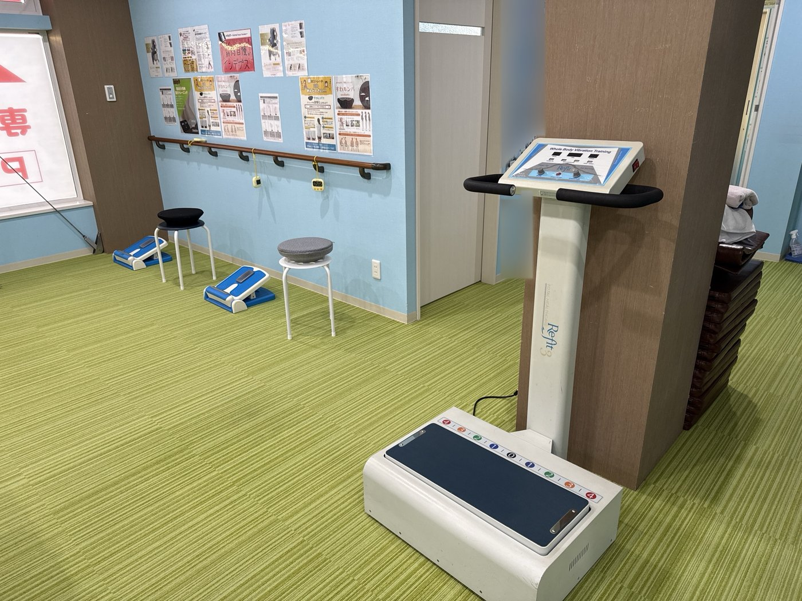
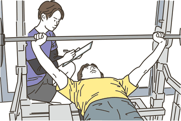
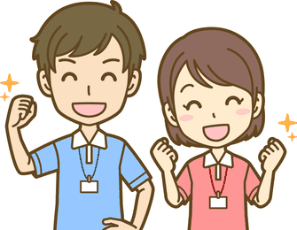
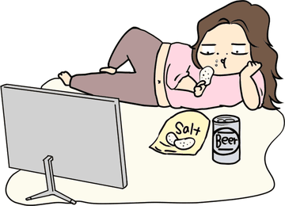
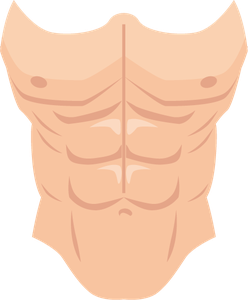
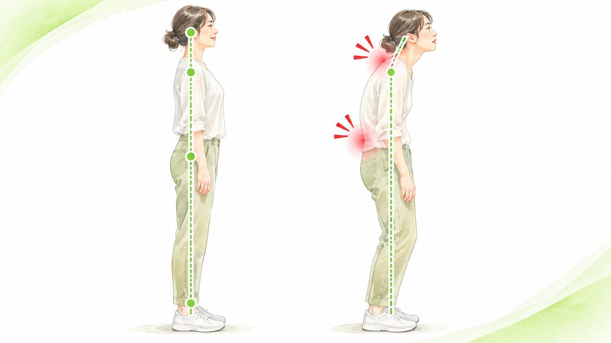
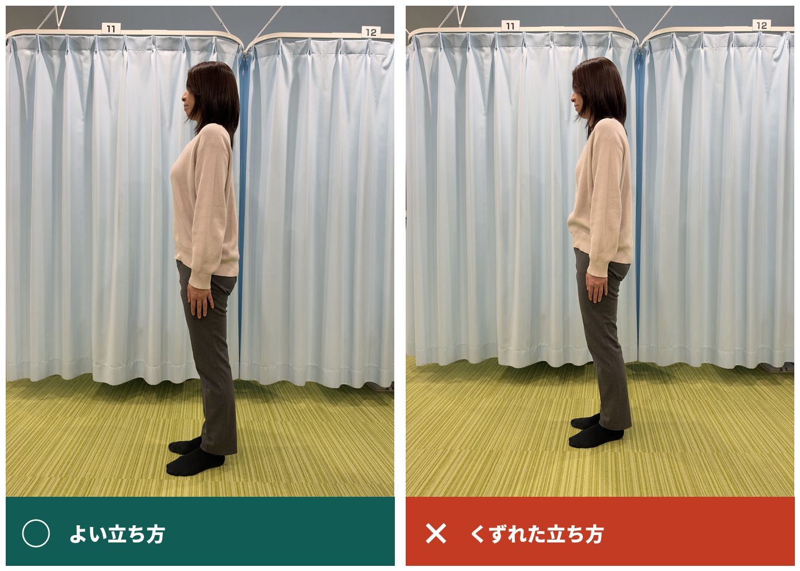
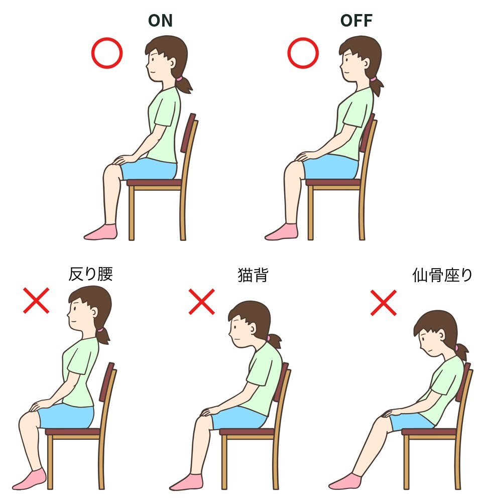
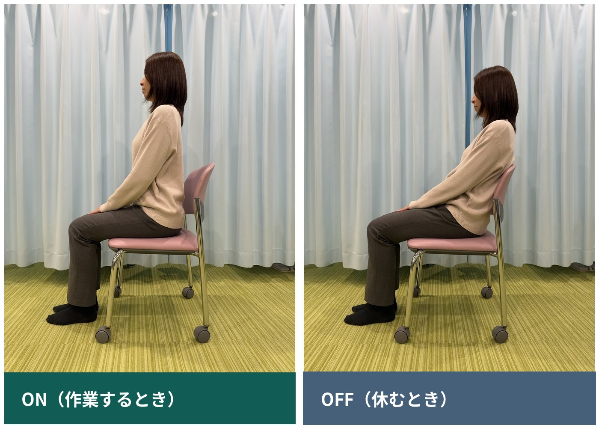
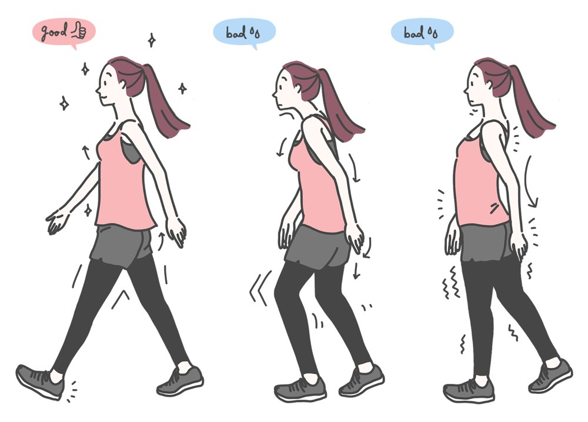

院で患者さんにお伝えしている姿勢指導
正しいカラダの使い方
反り腰・猫背を防ぐ、座り方・立ち方・歩き方
骨ぴか整体で歪み（ユガミ）を整えているからこそ、正しいカラダの使い方がしやすくなります。そのユガミが「その人にとっての正しい姿勢」になってしまいます。
良い姿勢をずっと続けられる人はいません。大切なのは、良い姿勢の時間を少しずつ長くすること。今まで使ってこなかった筋肉は弱っているので、最初は続かなくて当たり前です。続けることより、まずはチャレンジすることが大切です。

STEP 1 の前に
なぜ、腹筋からなのか

1鍛えたら向上する
2使っていると維持する
3使わないと衰退する
筋肉には、この3つの特性があります。使わないと衰えやすいのは、まず腹筋。次に内もも・二の腕・お尻・あごです。
太ったとき、おなかと腕に同じだけ脂肪がつくでしょうか？ 使われない筋肉は脂肪を燃やさないので、そこに脂肪がたまりやすくなります。鍛えているのにおなかの脂肪が取れないのは、日常生活で腹筋を使っていないからです。
鍛えることも大切ですが、使っていなければ衰えをくり返すだけで、効率がとても悪くなります。まずは「使える筋肉」にすること。そうすると維持しやすくなり、筋トレの効率も上がります。
体幹の中心は腹筋です。体幹がしっかりすると、カラダがユガミにくくなり、施術のあとも安定しやすくなります。腹筋の使い方ができないと、座り方・立ち方・歩き方もうまくできません。だから当院では、腹筋をEMSで「使える筋肉」に育てていきます。
STEP 1
腹筋の使い方

すべての土台。骨盤を「中間」に保つための使い方です。


- 骨盤が前に傾く（腰を反らせておなかを前に突き出す）と反り腰になり、首も前に出てしまいます。つま先は内股になりやすくなります。後ろに傾く（骨盤が丸く見える）と背中が丸くなって猫背に、つま先はがに股になりやすくなります。大切なのは骨盤の「中間」です。
- でも「中間を保って」と言われても、どこが中間か分かりません。そこで腹筋の使い方です。
- 練習は立って行います。足を胴幅から肩幅に開き、左手を下腹部に、右手をみぞおちに当てます。
- ① 下腹部を軽くへこませる。おしりが少し後ろに出て、カラダが軽く前に傾きます。
② へこませたまま、上体を起こしながら上に持ち上げる。その力をみぞおちのあたりまで上げるイメージです。
③ 肩の力を抜いて、その状態を保つ。すると自然に胸が張れます。これが、骨盤が「中間」になる腹筋の力の入れ方です。 - 反対に、胸を思い切り張ろうとすると腰が反って、おなかが前に出てしまいます。
- 人は腹筋を使わなくても背筋の力だけで立てますが、それでは腰に強い負担がかかります。
- 腹筋を正しく使うとおなかの中の圧が高まり、腰の筋肉が緊張してしんどくなってきます。そのときは我慢せずに一度脱力。楽になったら、また腹筋を使う。これを少しでも多くくり返すと、自然に胸の張れる姿勢になります。
- 腹筋が使えるようになると：腰が安定してきます。スポーツでも普段の生活でも、ケガをしにくく、ケガをしても回復しやすいカラダづくりにつながります。体幹が鍛えられるので、動きやすさも変わってきます。
- おなかを上に持ち上げるので、ウエストまわりが引きしまって見えるようになる方もいます（個人差があります）。これは体重が減ったのではなく、筋肉の使い方で見た目が変わったものです。体重を落としたい場合は、食事などの見直しが別に必要です。
STEP 2
座り方「ON-OFFの姿勢」
ずっと良い姿勢でいる必要はありません。

下：× 反り腰・猫背・仙骨座り（浅く座ってずり落ちる）

- デスクワーク中、学校の授業中、くつろいでいるとき、食事中。座っている姿勢はすべて同じ考え方です。
- デスクワークでは、背もたれに背中と腰を軽くあずけたまま作業していることが多いと思います。これがOFFの姿勢です。一見楽に感じますが、このままずっと続けると猫背が強くなり、肩こりや腰痛につながりやすくなります。
- OFFは悪い姿勢ではありません。休むための姿勢です。浅く座ると角度のきついOFFになるので、少し深めに座りましょう。背中の筋肉を休ませる大切な時間です。
- ON：OFFの姿勢から、ゆっくり骨盤を起こします。反り腰になりすぎないよう、骨盤を軽く立てるくらいで。座骨に少し体重がのり、自然に背すじが起きます。作業はこの姿勢で行います。ONのときは腹筋の使い方も一緒に。
- ONは自分の力で支える「自力」の姿勢、OFFは背もたれにあずける「他力」の姿勢です。この2つをくり返します。
- 切り替えのタイミング：ONで腰のまわりが少しでも疲れたと感じたら、我慢せずにすぐOFFへ。腰が休まったと感じたら、またONへ。
- 疲れているのに我慢してONを続けると、カラダがねじれたりかたよったりする原因になります。「しんどいからもうやりたくない」という気持ちにもなってしまいます。
- 最初はONの時間が短くて当たり前。良い姿勢を保つ筋肉が弱っているからです。ONとOFFをくり返しながら、ONの時間を少しずつ長くしていきましょう。
STEP 2
立ち方
左右均等に外くるぶしの真下に体重をのせて。
- 立っていると、左右どちらかに傾きやすくなります。片足に体重をのせると、反対の足を外に軽く出して立ってしまい、股関節が開いて脚の長さに差が出ます（仮性延長）。
- 左右均等に体重をかけましょう。足をそろえて立つと重心が一点になり、ふらつきやすくなるので、足は肩幅くらいに開き、つま先はまっすぐ正面に向けます。
- 体重は外くるぶしの真下にのせるイメージで。かかとにのせると、後ろ重心が強くなってしまいます。
- 腹筋の使い方を合わせると、立っているときに自然に胸が張れて、人からの見え方も良くなります。腰が疲れたら脱力して、またくり返します。
STEP 2
歩き方
まっすぐな線をイメージしてかかと→親指の順に。

- 地面にまっすぐな線があるとイメージしてください。骨盤が後ろに傾いている人は、股関節が外を向き、線をまたぐように歩いてがに股になります。がに股が強くなると猫背が強くなり、頭と首が前に出る姿勢になります。
- 骨盤が前に傾いて腰が反り、お腹が前に出ている人は、股関節が内側に入りやすく内また気味になります。つま先が線の上に乗り、かかとが外に開いたようになります。ハイヒールを履くことが多い女性によく見られます。
- ① 線の上に片方のかかとを乗せる ② 次に親指を線の上に乗せる。かかと→親指、かかと→親指と、線の上をまっすぐ進みます。これを腹筋の使い方をしながら行い、小またにならないようにします。
- 腕はしっかり振ります。前に振るのではなく、後ろに振ることだけを意識してください。前へ進む力が働いて、楽に歩けるようになります。
- 視線はまっすぐ前へ。3〜6mほど先を見て歩きます。下を向いて歩くと腹筋がゆるみ、体幹が弱くなります。体幹が弱いと軸が固定できず、ふらつきます。太ももの外側か内側のどちらかを強く使っている人も、ふらつきやすくなります。
- 前の足のつま先のすぐ先にかかとを置くと、綱渡りのような歩き方になってしまいます。いつもの歩幅で歩きましょう。
- 最初は慣れないので、ゆっくりで大丈夫です。普段難しい方は、スーパーで買い物をするときにカートに手を置いて、正面を見ながら足の運びを練習してみてください。
普段の生活で
普段の生活で気をつけたい3つのこと
気がついたら戻す。その積み重ねが大切です。
① 脚を組んでいたら戻す
脚の組み方は大きく3つあります。
- 脚を伸ばして足首と足首を重ねる
- ヒザをもう片方のヒザに重ねる
- ヒザの上に足首を乗せる
脚を組むと、上にした脚の側の骨盤がねじれて前に出ます。すると上の脚のほうが長くなったような位置になります。この状態が続くと、背骨や骨盤の歪み（ユガミ）につながります。
② かたよった姿勢に気づいたら戻す
- デスクワーク：右手でマウスを持ち、カラダを左にかたむけてヒジをつく、ほおづえをつく。おしりの骨（座骨）の片方にばかり体重がかかります。
- 車の運転：左ヒジをひじ掛けに乗せて右手でハンドルを持つ。これも片方に体重がかかります。
- 立っているとき：片方の脚に体重をのせると、のせていない側の股関節が外に開き、そちらの脚が長くなったような位置になります。
どれも無意識にやっていることです。気づいたときに自分で戻すことが大切です。
③ 寝る前に5〜10分 仰向けになる
仰向けは左右のバランスが取れた姿勢です。全身の筋肉を均等にゆるめて休ませることができます。
横向きが悪いわけではありません。ただ、横向きではきれいな姿勢を保ちにくく、脚を組んだような形や猫背、カラダをねじった形になりがちです。ユガミが強まりやすく、姿勢を保つための筋肉にも力が入ったままになります。
ねじれやかたよりが強くなると、体幹が弱くなり、カラダを支える力が落ちます。猫背や反り腰になり、肩こりや腰痛につながります。ヘルニアや狭窄症と言われた方にも、こうしたくせが見られることがあります。
カラダに無理がかかり続けると、回復する力も落ちやすくなります。

ぴかっto！（骨ぴかフォト）で、あなたの「現在地」を
骨ぴか整体の初回と定期券の更新のときに、タブレットで姿勢を撮影します。正面と横から姿勢のくせを数字とグラフでお見せし、あなたが特に意識するカラダの使い方をお伝えします。